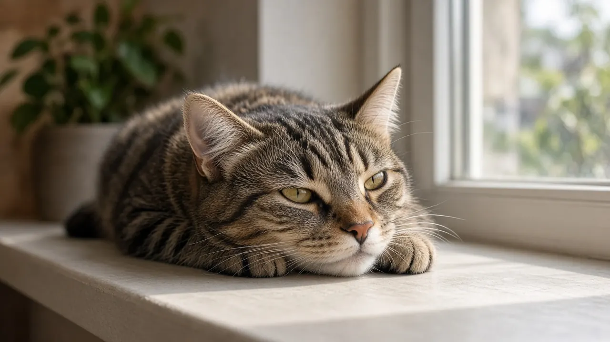

Why do cats lie in the sun?
Cats lie in the sun because they feel best at warmer temperatures than people do. A sunbeam lets a cat warm up without spending its own energy, and vets say healthy cats usually move into the shade when they get too hot.

Cats like it warmer than we do
The Cat Vet, a UK veterinary site, explains that cats have a higher thermoneutral zone than humans. That is the range of air temperatures where a cat can keep its core temperature steady without using extra energy, and it is about 30 to 38.5 degrees Celsius (86 to 101 degrees Fahrenheit). Catster gives the same range. When the air is cooler than that, a cat has to burn energy to stay warm, which is why The Cat Vet says cats seek out a windowsill or a patch of rug to sunbathe.
Reader's Digest quotes veterinarian Ashlie Saffire, who says air conditioned houses can be cold for a cat and that cats love to be warm. A cat's normal body temperature is also a little higher than ours, which helps explain why heat that makes people wilt seems fine to a cat.
Cool houses and sunny windowsills
An article in Veterinary Ireland Journal argues that cats hogging sunny windowsills in a home kept around 24 degrees Celsius may be showing what the author calls cold distress, soaking up heat because the room is cooler than they would like. That is one vet's view rather than a settled rule, but it fits the pattern of cats choosing the warmest spot in the house.
Is it for vitamin D?
Not for cats. Catster says that, unlike people, cats cannot make vitamin D from sun exposure, so sunbathing is about warmth and comfort rather than nutrition. Cats get the vitamin D they need from their food.
When the sun gets too much
Cats can still overheat. Catster says a cat can develop heat stroke if its body temperature reaches 105 degrees Fahrenheit or higher. Reader's Digest quotes veterinarian Amy Tate saying cats are good at regulating themselves and will usually move to shade or a cooler place when their temperature starts to creep up, and that most overheating happens when a cat is trapped somewhere hot, such as a carrier in a parked car or a shed.
Cats do not sweat like people. The Cat Vet notes they sweat only through the paw pads and rely mostly on grooming and panting to cool down, so they cope with extreme heat less well than you might expect.
Which cats need extra care
The Cat Vet lists cats more prone to overheating or sun damage: flat faced breeds, thick or long coated and overweight cats, and elderly cats or those with heart, breathing or thyroid problems. Dark coated cats absorb more heat in full sun. Hairless cats and cats with white fur or pink ears are prone to sunburn and, with long term exposure, skin cancer.
How to keep a sun lover comfortable
Let your cat have a sunny perch, but make sure there is shade, fresh water and a cooler spot such as a tile floor nearby. Keep cats out of parked cars and closed sheds. If your cat pants, drools, seems weak or wobbly, or its ears and skin feel very hot, move it somewhere cool and call your vet. Our guide to why cats sleep so much explains why so many of those sunny hours are naps.
Cat sunbathing FAQ
Why does my cat love sunbathing?
Cats are most comfortable at warmer temperatures than people. A sunbeam warms them without using their own energy.
Do cats need sunlight for vitamin D?
No. Catster says cats cannot make vitamin D from sun exposure, so they get it from food.
Can cats get heat stroke from lying in the sun?
Yes, though it is uncommon. Heat stroke can start when body temperature reaches about 105 degrees Fahrenheit, so provide shade and water.
Can cats get sunburn?
Yes. Cats with white fur or pink ears, and hairless cats, are more prone to sunburn and skin cancer, according to The Cat Vet.
Why does my cat lie in the sun inside on a warm day?
Cats can tolerate and enjoy warmth that people find too hot. They will usually move to a cooler spot when they have had enough.
Sources
Cite this page
Students and teachers are welcome to cite this page. Add your access date if your teacher or style guide asks for one.
APA (7th ed.)
MeowWise. (2026, November 13). Why do cats lie in the sun? https://meowwise.com/blog/why-do-cats-lie-in-the-sun.html
MLA (9th ed.)
“Why do cats lie in the sun?” MeowWise, 13 Nov. 2026, meowwise.com/blog/why-do-cats-lie-in-the-sun.html.
Chicago (bibliography)
MeowWise. “Why do cats lie in the sun?” Last modified November 13, 2026. https://meowwise.com/blog/why-do-cats-lie-in-the-sun.html.
General education, not veterinary advice. If you are worried about your cat, contact your veterinarian; in an emergency, go to the nearest emergency vet.